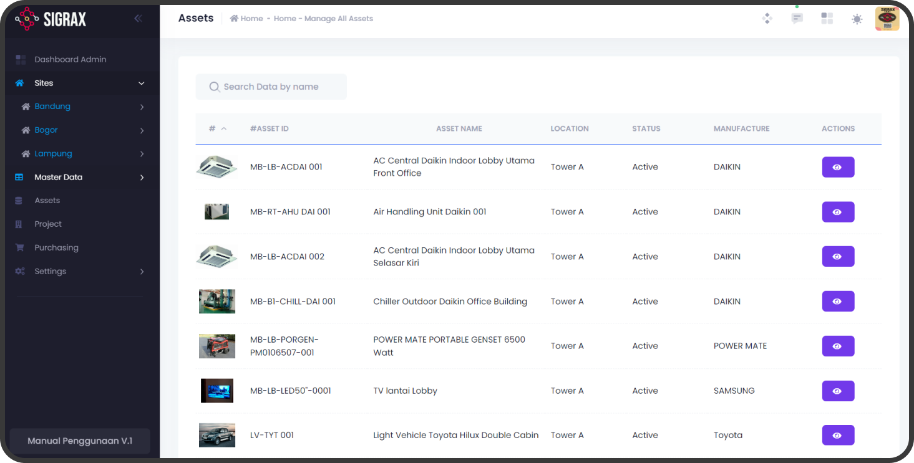
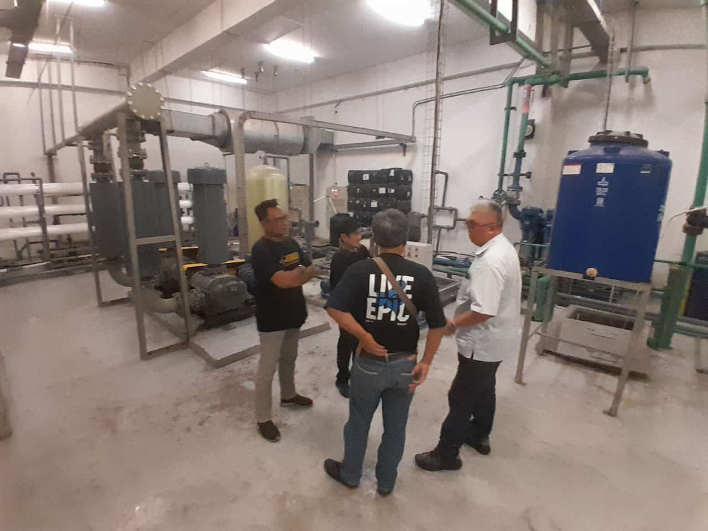
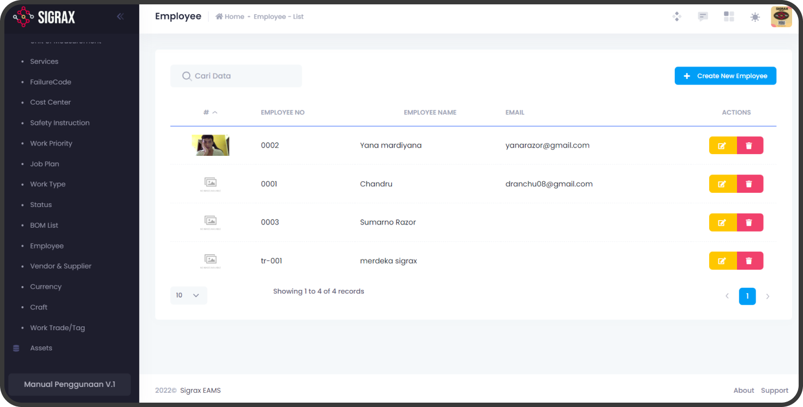

Katalog 11 Modul Lengkap Sigrax CMMS
Dirancang menyeluruh dari level operasional teknisi di lantai pabrik hingga dashboard pengambilan keputusan manajemen tingkat atas.

Executive Dashboard
Modul utama pertama saat membuka aplikasi. Memberikan ringkasan komprehensif atas biaya yang dikeluarkan, status pekerjaan pemeliharaan, serta performa uptime pabrik.
- Monitoring metrik real-time & status breakdown
- Rekapitulasi pemakaian biaya suku cadang
.png)
Master Data Hub
Pusat data terintegrasi yang menyimpan seluruh informasi aset, lokasi penempatan, data teknisi, vendor penyedia part, satuan unit, dan kategori mesin pabrik.
- Standardisasi kodefikasi aset otomatis
- Sentralisasi database seluruh lini produksi

Manajemen Aset & Mesin
Kelola seluruh profil mesin manufaktur. Lacak riwayat perbaikan, masa garansi, spesifikasi teknis komponen, serta nilai depresiasi buku aset secara akurat.
- Rekam jejak servis lengkap per nomor seri
- Riwayat pergantian spare part per mesin

Hierarki Lokasi & Fasilitas
Pemetaan struktur lokasi penempatan aset secara teratur (Plant > Building > Line > Station). Memudahkan teknisi menemukan titik mesin yang membutuhkan penanganan.
- Struktur pohon hierarki lokasi bertingkat
- Filter cepat aset berdasarkan area pabrik

Work Request Portal
Media pelaporan cepat bagi operator lini produksi ketika menemukan kendala atau anomali pada mesin. Menghilangkan birokrasi formulir kertas yang lambat.
- Pengajuan tiket kerusakan instan dari lapangan
- Prioritas tiket (Low, Medium, High, Emergency)

Work Order & Eksekusi
Pusat manajemen penugasan tugas teknisi. Melacak status pelaksanaan pekerjaan (*Open*, *In Progress*, *Pending Parts*, *Completed*) hingga verifikasi supervisor.
- Checklist perbaikan digital dengan foto bukti
- Pencatatan jam kerja teknisi & suku cadang

Material & Parts Request
Permintaan suku cadang terintegrasi langsung dengan nomor Work Order. Menjamin akurasi pemakaian spare part dan alokasi biaya perawatan per mesin.
- Validasi ketersediaan stok di gudang maintenance
- Alur approval pengambilan part oleh supervisor

Inventaris Gudang & Tools
Kelola stok suku cadang, alat kerja teknisi, dan bahan habis pakai. Dilengkapi notifikasi stok menipis (*reorder point*) untuk mencegah keterlambatan perbaikan.
- Peringatan otomatis batas stok minimum (*Min-Max*)
- Riwayat mutasi masuk, keluar, dan penyesuaian stok

Preventive Maintenance
Otomatisasi jadwal servis preventif dan inspeksi berkala. Mencegah kerusakan sebelum terjadi, memperpanjang usia mesin, dan menjaga kestabilan output pabrik.
- Penjadwalan kalender atau berbasis Running Hours
- Generate Work Order otomatis menjelang jatuh tempo

Manajemen Tim & Teknisi
Kelola data teknisi, sertifikasi keahlian (mekanik, elektrik, automasi), pembagian shift, dan beban kerja harian agar distribusi penugasan seimbang.
- Pemetaan keahlian teknisi sesuai jenis mesin
- Evaluasi produktivitas & waktu respon teknisi

Laporan & Analitik Audit
Ekspor laporan audit ISO, rekap biaya bulanan, analisis penyebab kerusakan dominan, dan laporan evaluasi KPI pemeliharaan dalam format PDF/Excel siap cetak.
- Ekspor data fleksibel ke Excel & PDF
- Analisis biaya pemeliharaan per departemen